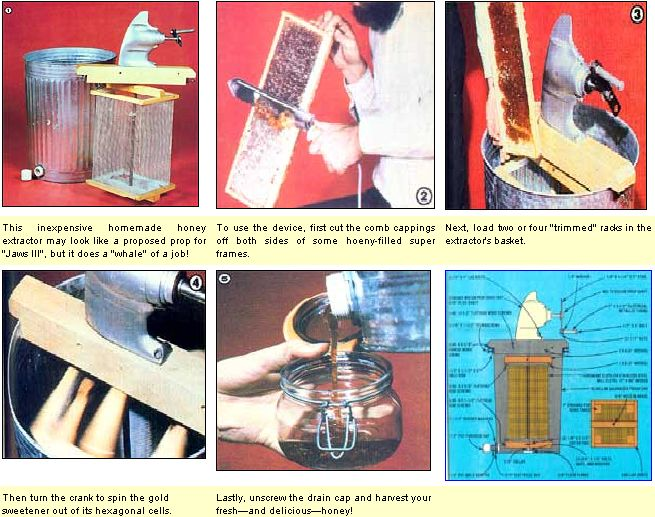

Yes, you can avoid the disadvantages of being limited to producing only cutcomb honey, and beat the mile-high cost of most quality commercial rotary "removers".
The purchase of a honey extractor is a significant step for any beekeeper, but the financial burden can prove to be particularly traumatic for the one- or two-hive amateur apiarist. At $150 or more (for the most basic models), the cost of an extractor will easily exceed the total of all the other expenses a beginner is likely to face... forcing many neophyte beekeepers to stick to comb honey production (which is less efficient, since the bees use up extra energy, and honey, replacing the waxwork that's "stolen" with each harvest).
Aside from the cost, though, the advantages of having an effective rotary extractor are considerable: Such a device will separate honey from its comb in a matter of minutes, and can actually increase hive productivity by more than 50%. An extractor, you see, allows the beekeeper to retain the entire comb network intact during honey removal and then return the ready-for-filling comb to the hive. It's not surprising, then, that a diligent group of Apis mellifera will yield far more of the product you're interested in when they're spared the trouble of rebuilding their "pantry" every time honey is removed.
The instructors of MOTHER's beekeeping seminars (see page 48) and members of the magazine's staff who keep hives have long urged our research crew to design an inexpensive build-it-yourself extractor. And-after nearly a year of testing, revision, and encouragement-we're finally ready to unveil the finished product: It's a handcranked model capable of processing four honey frames at one time ... which can be built for less than $50!
After trying a number of different approaches to contriving an extractor that would spin at 200-plus RPM, we finally settled on a method first suggested (to our knowledge) in the pages of the Ohiobased magazine Gleanings in Bee Culture. Because the basket must rotate on a vertical axis, and because most folks find it is far more practical and convenient to crank on a horizontal axis, the critical component of our extractor is actually the rightangle gear set from the foot of an old outboard motor. Using one of these recycled boat parts-which typically have ratios between 1.5-to-1 and 2-to-1-our spinner is able to achieve the necessary rotational speed.
So, the first component you're going to have to hunt up is a junked outboard motor with a good foot gear assembly and prop shaft. Look for one with a vertical shaft that's 5/8" thick and at least 26" long from the top of the lower gear case.
The crank can be fashioned from a 7"-long strip of 1/8" X 1-1/4" strap steel ... and a 3-1/2" piece of 1/2" electrical metallic tubing (EMT), slipped over a 1/2" X 5" bolt, will serve as the handle. Of course, you'll also need to bore a propeller-shaft-sized hole in the steel so that the crank can be secured with a nut.
To make a base for the right-angle gear assembly, glue and screw two 24"-long 2 X 4's together, and bore a 3/4" hole all the way through the joint of the two boards, at a point 12 inches from either end. Then counterbore that hole to the diameter of the boss on the motor housing ... which-on our unit-happened to be 1-1/2". Since the inside diameter of a 30-gallon steel trash can is about 21 inches, the crosspiece can be made to fit the container's opening if you cut a 1-3/4" X 2"notch from each of its ends.
With that done, screw a 2" length of 1-1/2" angle iron to the recesses formed in the ends of the boards, tap the vertical portions of the plates to accept 3/8" bolts, and thread a 3/8" X 1-1/2" thumbscrew into each one ... so that the fasteners will clamp the crosspiece/crank assembly to the sides of the can.
If the existing shaft of the outboard motor is long enough to span the 19-inch distance between the basket's upper and lower frames, no additional connecting reinforcement (beyond that provided by the existing shaft and wire mesh) will be required. Therefore, you'll only need to build two identical frames from 1 X 6 and a ripped 2 X 4.
Prepare eight 3/4" X 1" pieces for the boxes by cutting 1 "-wide strips from a 1 X 6 board (which will actually be 3/4" thick). Four of these sections will be 12" long, while the other four should be cut to 13-3/4". Then end-lap all eight pieces 3/8" deep and 1" long on both ends. Assemble two 12" X 13-1/4" rectangles from the 1 "wide boards, glue them together, and countersink a No. 6 X 5/8" flathead screw into each end-lap joint. As you go, check the "squareness" of the two frames by measuring the diagonal distances to make sure they're equal.
The top and bottom braces-which will also position the axle-can be made by ripping a 13-3/4 "-long 2 X 4 down its 3-1/2" dimension ... to yield two 1-1/2" X 1-3/4" X 13-3/4" boards. Before attaching a brace to each wooden rectangle, bore a 5/8" hole through the 1-1/2" face, exactly in the center. Then just glue the 13-3/4" boards to the frames (parallel to the 13-3/4" dimensions and centered) and countersink two No. 6 X 1-1/2" flathead screws into each joint.
To make the sides and bottom of the basket, cut 1/4"-mesh hardware cloth into one 12" X 48" and two 10" X 19" pieces, bend the long sheet to form a U-shape with 90° angles at 19" and 29", and staple the mesh to the two frames (use short twists of wire to secure the open edges). Finally, trim out a 2" square hole in each of the four corners at the bottom of the basket (to accept the tangs, or projections, of the honeycomb racks).
Securing the finished basket to the 5/8" shaft is merely a matter of sliding the axle through the 5/8" holes in the braces, placing the assembly on the floor so that the rectangular ends are square to each other, and drilling 1/8" holes through each wooden brace and the metal shaft ... to accept cotter pins. The two keys will prevent the basket from spinning on the shaft, yet will allow you to remove the basket easily for cleaning. Finally, to provide an added measure of security, we also placed a 5/8" collar on the 5/8" rod, just under the bottom brace.
The basket's shaft spins in a 3/8" floor flange which we bored out to 5/8" and mounted exactly in the center of the bottom of the trash can. Use rubber seals or a generous dollop of silicone sealant when you fit the 3/8" X 1/2" bolts through the flange.
Because honey is a somewhat viscous substance, a large drain is necessary to allow the extracted sweet to flow from the tub in a relatively short time. MOTHER's researcher Randy Weis devised a generously sized drain from standard plastic plumbing parts: a 1-1/2" PVC male adapter with most of the unthreaded part cut away, two rubber washers, an electrical nut to hold the adapter against the can, and a 1-1/2" PVC cap to seal the drain.
Round off the corners of the wooden parts of the honey extractor, sand them, and finish the components with polyurethane varnish. Then coat all the hardware cloth and the inside of the galvanized can with a nontoxic paint, to prevent chips of the harmful galvanized metal from getting into your honey. (Most health inspectors would not consider the painting of galvanized parts to bee sufficient safeguard for producing honey for sale . . since the paint may be chipped by rough handling. Stainless steel mill cloth and a food-grade plastic or stainless steel tub will be necessary if you plan to use the device for commercial purposes.)
Operating the handcranked honey extractor is, of course, the easiest part of the procedure. The basket will accept two or four shallow, or two deep, super frames (always process even numbers of comb-holders and place them on opposite sides of the cage to maintain balance). Uncap the honey cells (see accompanying photograph), position the com-bladen racks in the basket so that their tangs settle into the 2"-square holes in the wire bottom, and spin them gently for about 30 seconds. Then reverse the frames and spin the extractor more rapidly. Once the honey has started to flow freely from the combs, you can reverse the frames one more time and let a final go-round squeeze out the last drops of liquid gold.
EDITOR'S NOTE: A one-year subscription to the monthly magazine Gleanings in Bee Culture may be obtained by sending $8.75 to A.I. Root Co,, Dept TMEN, P.O. Box 706, Medina, Ohio 44256.
For information on how to order a copy of MOTHER NO. 67, which contains a minimanual of "Beekeeping Basics", turn to page 148.
|
 STAFF PHOTOS |
|
|